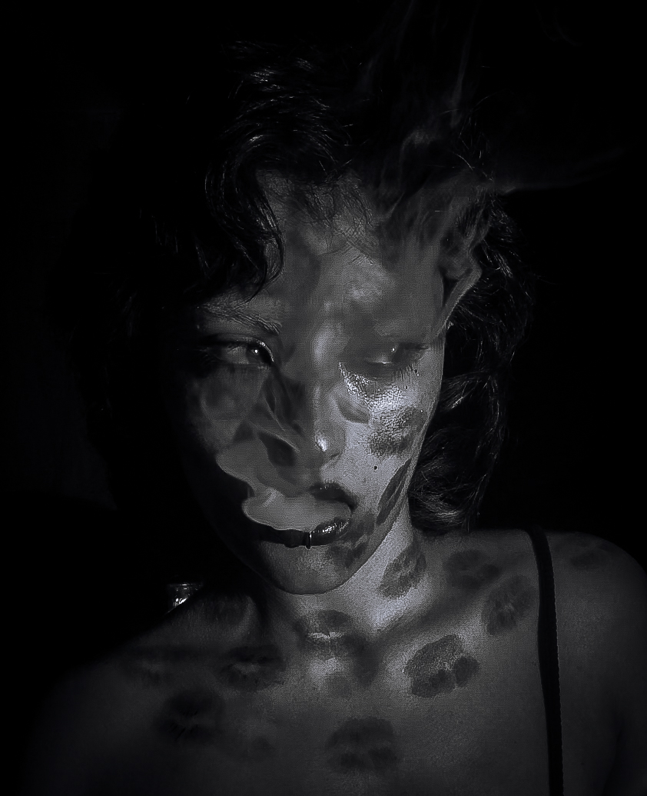
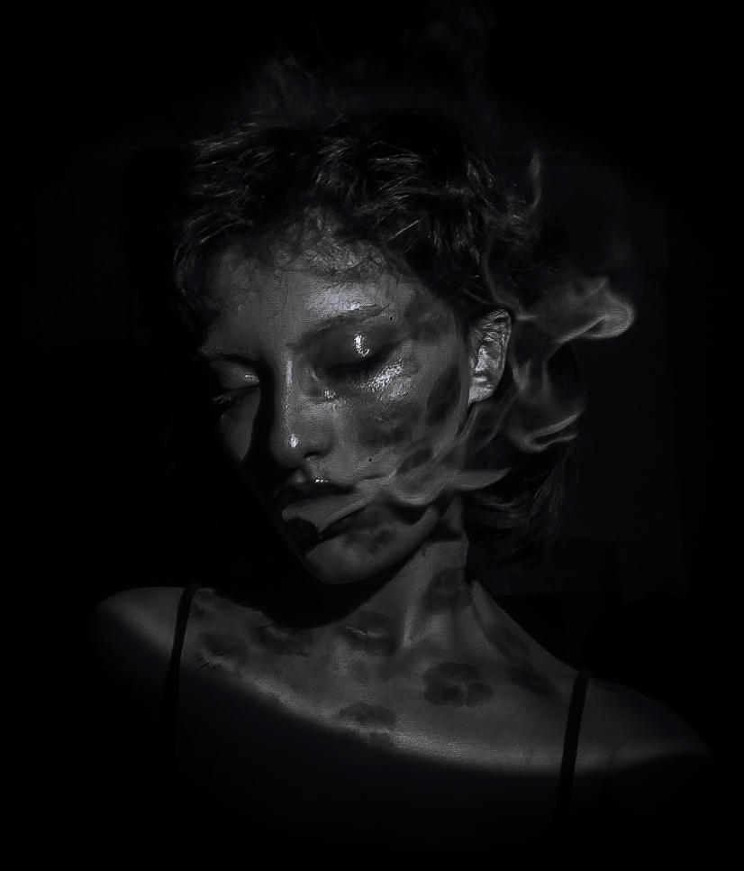
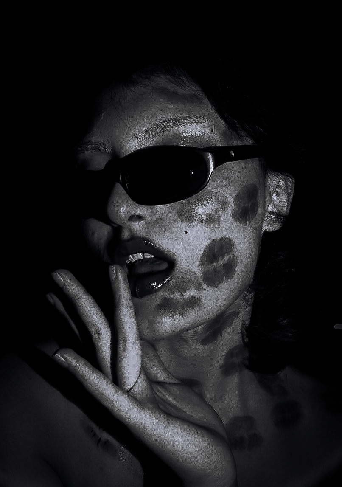

Merhaba, ben Damla Özşahin. Fotoğrafçının ve çekilen fotoğrafın farklı renkte ruhlara sahip olduğuna inanırım.Her an, her kare, bir duyguyu, bir hikayeyi yansıtır; sadece bakmakla kalmaz, hissederim. Her fotoğraf, içinde farklı bir dünya barındırır, ışığın, gölgenin, renklerin ve detayların birleşiminden doğar. Benim için fotoğraf, sadece bir görüntü değil, bir ruh halidir; her anın büyüsünü yakalamak ve o anı ölümsüzleştirmek için sürekli bir keşif sürecidir.Ben de size burda keşif sürecimi paylaşmak istedim.
  “Fotoğrafçılık benim için bakmak değil, hissetmektir. Eğer baktığınızı hissedemiyorsanız, başkalarının resimlerinize bakarken hiçbir şey hissetmesini asla sağlayamazsınız. -Don McCullin


“ Fotoğrafçılık zamanın dışına bir an çıkarır, onu hareketsiz tutarak hayatı değiştirir.” -Dorothea Lange


” Bir resmin en iyi yanı, içindeki insanlar değişse bile asla değişmemesidir.” -Andy Warhol


“Fotoğrafçılığın sırrı, kameranın, çekim yapan kişinin karakterini ve kişiliğini üstlenmesidir.” -Walker Evans’ın